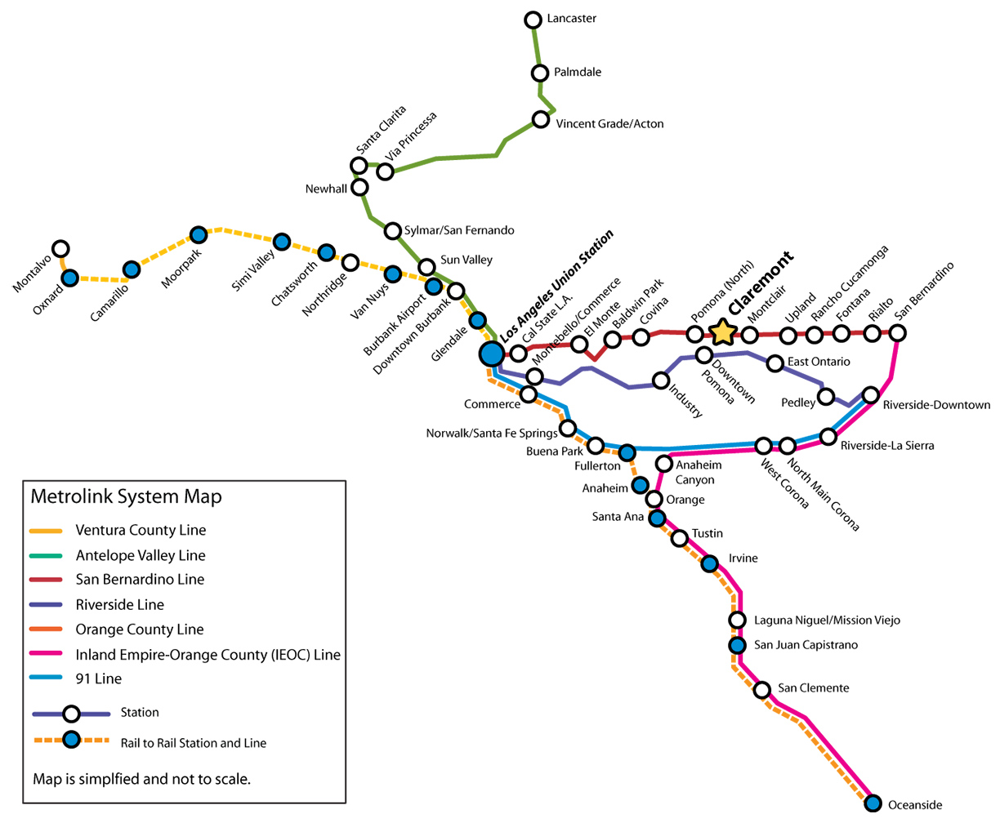

The DoubleTree Hotel in Claremont, where CUWiP@SoCal participants will be lodged.
The conference will be spread across the three colleges of Harvey Mudd, Pomona, and Cal Poly Pomona, situated about 35 miles east of Los Angeles. Attendees will spend one day at each institution, beginning with Friday at Harvey Mudd, Saturday at Pomona, and finishing up on Sunday at Cal Poly Pomona.
Participants will be lodged at the DoubleTree Hotel in Claremont, detailed under Accommodation. Shuttles will take students between the hotel and certain conference events. Shuttle schedules are posted on the agenda. If you have concerns about accessibility or would like to request special accomodation, please contact us.
We encourage local participants to travel to Claremont by car or Metrolink. For longer distance travel, we recommend commuting by driving, taking a train, or flying. Be sure to contact us as well as your department/source of funding to approve your flight or train fare before making a reservation.
Driving anywhere in the Inland Empire around Los Angeles on a Friday afternoon is risky, frustrating business. We strongly encourage participants who will be driving to plan to travel to Claremont as early in the day as possible, even though official conference events will not start until around 5 pm. Rush hour occurs on weekdays between 5 am and 10 am, and in the afternoon between 3 pm and 7 pm, although rush-hour traffic can occasionally spill out to 11 am and start again from 2:00 pm until as late as 10 pm, especially on Fridays. We know not everyone is able to come so early; to those who are unable to avoid the traffic, we wish you the best.
Carpooling is strongly encouraged. The Claremont area is very car-friendly so long as you avoid Los Angeles rush hour. For those interested, we will provide a list of volunteered participant contact information after registration closes to help facilitate this process. Our Facebook is also available to help you connect with other conference participants. We advise attendees who are driving to come directly to Harvey Mudd for check in. Students can either leave their bags or bring them to stow at the check-in location, which will be announced nearer to the conference date. After the conference begins, students can then drive back to the DoubleTree Hotel, where attendees will be lodged:
DoubleTree by HiltonWe encourage participants to walk to the institution hosting the conference events each day. Shuttles will also be available to transport participants to certain events. Shuttle schedules can be found on the agenda. Harvey Mudd is an easy five minute walk (less than a mile) from DoubleTree. Pomona is slightly more than a mile. Limited parking will be available near to the conference event locations for those interested in driving.
On Sunday, shuttles will transport students to conference events at Cal Poly Pomona in the morning and back to DoubleTree after the conference finishes in the afternoon. If you need to leave early, there is onsite parking available. Cal Poly's campus is roughly a 15-20 minute drive from DoubleTree.
The Metrolink train station in Claremont is a few blocks from Harvey Mudd and Pomona as well as the DoubleTree Hotel. Students may walk to the hotel or colleges or call the free DoubleTree in-town shuttle at 909-626-2411.
One-way tickets are available to purchase at ticket vending machines, which are located on or near Metrolink train platforms. Travelers must purchase a ticket before boarding the train and present the ticket to the fare inspector on request. Student discount is available.
Take the San Bernardino line east from Union Station in Los Angeles, or west from San Bernardino. As of August 2nd, 2017, fare for this travel is $7.00. You can refer to the Metrolink map below (Claremont station is emphasized) to plan your route or visit the Metrolink website directly.
the map to view it full-sized.
If you are traveling from further north or south of Los Angeles than the extent of the Metrolink system, Amtrak trains provide a fairly direct route to Los Angeles Union Station, from which you can connect to Metrolink to travel to Claremont. Please refer to the Amtrak homepage to plan your route.
Attendees from greater distances may need to fly. Be sure to contact us as well as your department/source of funding to approve your flight before reserving your ticket. The nearest airports are Ontario International Airport (ONT) and Los Angeles International Airport (LAX). We recommend avoiding LAX if at all possible. ONT is substantially closer and easier to access from Claremont, and a shuttle may be available to take attendees directly to the check-in location at Harvey Mudd if there is enough interest. Shuttle schedules will be posted closer to the conference date.
If you are commuting to CUWiP by car, you may either leave your car at the DoubleTree Hotel and walk or shuttle to conference events at Harvey Mudd and Pomona or drive. For those who would like to walk, Harvey Mudd is an easy five minute walk (less than a mile) from the DoubleTree through pleasant and shady Claremont. Pomona is slightly more than a mile. On Sunday, shuttles will take all conference attendees to and from Cal Poly Pomona. If you would prefer to drive, parking will be available at each campus near to conference event locations. If you require special accomodation, please see our information on accessibility.
The DoubleTree Hotel has ample onsite parking in its hotel lot available at no extra charge. Conference participants may leave their cars parked at the hotel for the duration of the conference.
Parking near Harvey Mudd's campus is the most limited of the three campuses. Parking information will be available closer to the conference date.
There is no shortage of on-street, free parking near Pomona. For the closest parking, visitors should aim to park on College Ave near 6th street, or on 6th or 7th street between College and Harvard. A map with a full list of convenient parking locations will be available before the weekend of the conference.
Parking information will be available closer to the conference date.
Conference lodging will be provided at the DoubleTree Hotel in Claremont:
DoubleTree by HiltonThe hotel is a short walk from Harvey Mudd College, Pomona College, and the downtown Claremont Village. Attendees will be housed 2 or 4 to a room with two double-sized beds. We welome roommate and housing requests during registration and will do our best to honor them. If requests or preferences are not specified, we will group students by school where possible.
Upon arrival at DoubleTree, please have your photo ID available to check in at the front desk. No additional purchases may be charged to the room; a personal credit card must be used.
Meals, snacks, and coffee breaks will be provided to all participants. You will be able to note any dietary restrictions when completing registration, however if you still have concerns, please contact us at that time.
Shuttles will be available to transport students between the hotel and certain conference events as well as between the Claremont train station and the Ontario airport for participants arriving and departing. Shuttle schedules can be found on the agenda.
We strive to make CUWiP as accommodating and welcoming as possible. If you have concerns about travel, lodging, food, or otherwise that are not addressed here or in our FAQ, please contact us.
{kind=link}